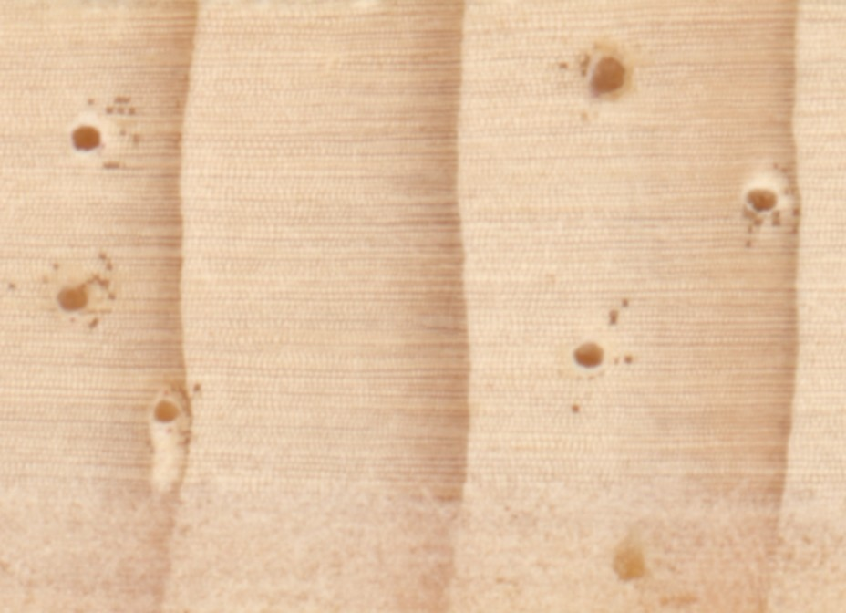
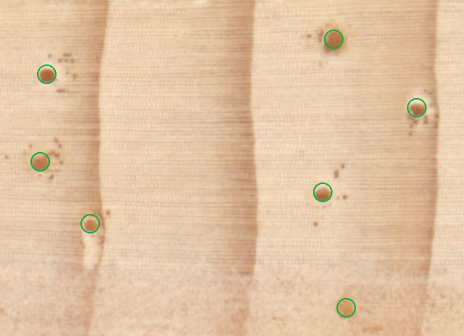

Count the resin ducts in tree-core images
You'll look at images of tree cores and count the small resin ducts in each one by clicking on them. It takes about 8 minutes.
A laptop or desktop with a mouse or trackpad works best.
This link is missing its study version. Please use the link from the class spreadsheet.
What to do
Resin ducts are small canals in the wood. In these images they look like round, orange-brown dots, about the size of a pinhead, often with a pale halo.


Rules
- Count only in the bright area. Parts of some images are greyed out: ignore any ducts there.
- Count each duct once. Two ducts touching each other count as two.
- Don't count tiny dark specks. The scattered small dots around ducts are not ducts. A duct is noticeably larger and round.
- A duct cut by the edge of the bright area counts only if its centre is in the bright area.
How to count
- Click a duct to put a pink marker on it. Your count goes up by one.
- Click a marker to remove it.
- Zoom with the scroll wheel or the + / − buttons. Drag to move around.
AI assistance
An AI model has already looked at each image. Every duct it found has a cyan outline, and these count toward your total.
- The AI is usually right but not always. It tends to miss faint or small ducts and two ducts touching each other, and it sometimes outlines a dark speck that isn't a duct.
- Click a cyan outline to reject it if it isn't a duct; it turns grey and stops counting. Click again to restore it.
- Click a duct the AI missed to add your own pink marker.
- You decide the final count.
After each image you'll say how confident you are in your count. There's a short questionnaire at the end.
Quick check
Which ducts should you count?
Click each duct in the bright area. Click a marker to remove it. Scroll to zoom, drag to move.
How confident are you that your count is exactly right?
A few questions about the task
Please answer every question.
Saving your answers…
Please keep this page open for a moment.
Please start again
That answer didn't match the instructions twice in a row, so this session has ended. Please reload the page and read the instructions carefully.